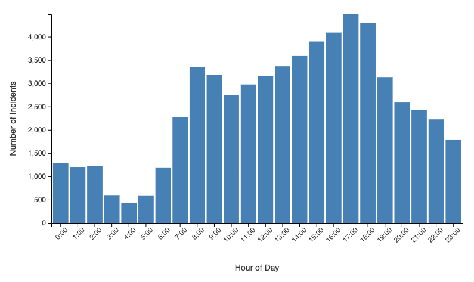

The visualization overlays multiple data layers on a map of San Francisco: traffic accidents as red data points and a crime heatmap. By examining these layers in conjunction, we can attempt to discern patterns and potential causal relationships among crime rates and traffic safety.
Concentrations of accidents appear to correlate with high-traffic corridors and bustling commercial areas. Notably, the northeast quadrant of neighborhoods like the Financial District, Chinatown, and parts of Downtown shows a dense cluster of both accidents and reported crimes. This correlation could be influenced by a combination of higher population density, greater volumes of pedestrian and vehicular traffic, and the presence of nightlife venues. Busy main streets such as Market Street and major intersections around Union Square and SoMa may serve as magnets for collisions due to higher congestion, frequent pedestrian crossing, and the complex movements of cars, cyclists, and scooters. In contrast, residential areas toward the western side of the city have comparatively fewer accidents. These neighborhoods tend to have more uniform street grids, lower traffic speeds, and fewer large commercial hubs, reducing the likelihood of collisions. Crime densities in these neighborhoods also appear lower on the map, suggesting that lower density and quieter streets may create both safer driving conditions and less opportunity for certain types of crime.
While the presence of crime does not directly cause traffic accidents, the correlation suggested by the heatmap may reveal that both are symptomatic of underlying environmental and socioeconomic conditions. For instance, areas with significant social challenges—higher crime, concentrated poverty, and fewer resources—tend to have less well-maintained public infrastructure. Over time, inadequate infrastructure investment can create more hazardous streets. Furthermore, higher crime rates can indicate neighborhoods with more transient populations, nightlife, or economic hardships conditions that potentially contribute to more chaotic street environments. Distracted driving, impaired driving, or people more frequently driving through unfamiliar neighborhoods can all increase the risk of accidents. Though the visualization cannot establish direct causation, it does highlight that some neighborhoods face overlapping challenges that include both personal safety and traffic safety.
Safe street design upgrades such as protected bike lanes, improved crosswalks with better signage, traffic calming measures, and dedicated bus lanes can reduce collisions and improve the pedestrian experience, particularly in low income areas. Additionally, working with local communities to identify dangerous intersections, holding traffic safety workshops, and engaging in community policing efforts may help curb both crime and reckless driving.
The map below allows you to filter ZIP codes by median income, total accidents, fatality rates, and average injured people. By adjusting these filters, patterns in which high-income areas often have slightly fewer severe accidents may become evident.
The bar chart below compares the top 5 high income ZIP codes to the bottom 5 low income ZIP codes in San Francisco. The top 5 wealthiest areas have an average of 1.26 people injured per accident with a 0.8% fatality rate, while the bottom 5 poorest ZIP codes show an average of 1.28 people injured and a 1.3% fatality rate. Although the differences are subtle, they highlight that lower-income areas face slightly worse outcomes in terms of fatalities.
There are several possible reasons for these disparities San Francisco's ZIP codes vary widely in terms of median household income. In general, the city's higher-income areas can be found in neighborhoods like Pacific Heights, Presidio Heights, and parts of the Marina. These upscale neighborhoods often have well-maintained infrastructure, calmer traffic patterns, and more robust safety measures, potentially leading to fewer severe traffic incidents. Pedestrian-friendly street design, traffic calming measures (such as speed humps or protected bike lanes), and active neighborhood associations advocating for safer streets may all contribute to fewer accidents. On the other hand, neighborhoods with historically lower median incomes—such as portions of the Tenderloin, SoMa, and Bayview-Hunters Point—have historically faced challenges that intersect with transportation safety. The map suggests that some of these areas exhibit elevated rates of both crime and traffic accidents. Although the root causes are multifaceted, several plausible factors can be considered:
Providing equitable infrastructure would be a stepping stone in alivating the disparity. Ensuring that all neighborhoods regardless of income receive adequate lighting, road maintenance, and pedestrian amenities can level the playing field. This equity focused approach can improve quality of life and reduce the incidence of collisions and related injuries. Lower income areas typically lack investment and ammenities of this kind. Shifting this long standing paradigm is essential.
An essential dimension of understanding traffic accidents involves examining their temporal distribution. By identifying the days and hours when collisions are more frequent, we can gain insights into the underlying conditions that increase the likelihood of an incident—whether that's rush-hour congestion, weekend leisure travel, or the interplay of workday commuting patterns.
There is a clear pattern across the seven day cycle. While traffic incidents occur consistently every day, certain weekdays stand out for having higher volumes of reported accidents. In particular, midweek through Friday tends to show elevated levels of incidents. This pattern may be linked to a combination of factors, such as commuters traveling during peak working days, increased economic activity centered around the Monday through Friday schedule, and heightened roadway congestion during these periods. The concentration of accidents on weekdays suggests that the rhythms of the workweek standardized start times, lunch breaks, afternoon rush hours, and possibly increased commercial deliveries play a significant role in shaping traffic risk. On the other hand, while weekends still see a substantial number of collisions, the total counts are generally lower compared to weekdays. This could reflect a relative reduction in commuter traffic and commercial activity on Saturdays and Sundays. However, leisure and tourism related driving during weekends, along with increased nighttime entertainment traffic, may still contribute to significant numbers of incidents, albeit distributed differently over the day and potentially concentrated around specific neighborhoods or leisure hubs.
Temporal patterns on a daily scale highlight the strong influence of the traditional commute structure. During the overnight and early morning hours (midnight through roughly 5:00 AM), less accidents occur. With less traffic and emptier streets, fewer collision opportunities arise, even though those that do occur might sometimes be linked to impaired driving or visibility challenges. As the morning wears on, incidents start to rise sharply. The hours from 7:00 AM onward correspond to the height of rush hour, when many individuals simultaneously hit the roads to reach workplaces or schools. The volume of accidents typically reaches a plateau or gently rises throughout the mid to late afternoon, culminating in a peak around the later rush hour (roughly 4:00 PM to 6:00 PM). This surge is reflective of increased roadway usage as people return home from work, run errands, and engage in other activities. It is during these late afternoon and early evening hours that traffic density, driver fatigue, and the interplay of various urban activities create a heightened environment for collisions. Beyond the commute windows, incident counts gradually taper off into the late evening. Although nighttime hours show fewer incidents overall, factors like impaired driving, reduced visibility, and weekend entertainment patterns can still make certain late night hours more prone to accidents than one might expect based solely on traffic volume.
This visualization provides the timeframe filters above along with filters for month and year. It provides a comphensive overview of how timeframe factors impact the distribution of accidents.
Understanding these timeframe patterns can inform targeted interventions aimed at reducing accident risk. For example, increasing traffic enforcement or safety campaigns during peak commute hours, implementing intelligent traffic signal timing on high volume areas, or offering incentives for staggered work schedules could potentially mitigate the risk. Similarly, focusing on pedestrian and cyclist safety improvements in corridors with known high afternoon and evening crash rates could also prove beneficial. This data provides vital clues about how human behavior, economic patterns, and the built environment shape roadway safety. These insights can guide planners, policymakers, and community groups as they work together to improve traffic conditions and reduce traffic accident related harm in San Francisco.
The analysis of these datasets reveals a complex interplay of factors like income, crime, infrastructure, and population density that collectively shape traffic safety outcomes in San Francisco. While affluent neighborhoods tend to enjoy well maintained roads, effective traffic calming measures, and comparatively safer travel conditions, communities grappling with lower incomes and higher crime rates often face infrastructural deficits that elevate both the frequency and severity of accidents. As these visualizations and data points suggest, addressing traffic safety in San Francisco requires more than just managing vehicle flow; it demands equitable investment in road improvements, community engagement, and policy interventions that prioritize underserved areas. Ultimately, a holistic, data driven approach to urban planning and resource allocation can help reduce traffic injuries and fatalities across the city improving the quality of life for all who call San Francisco home.